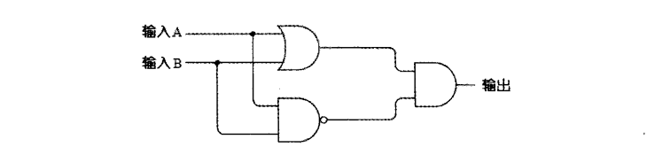
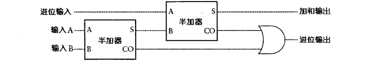
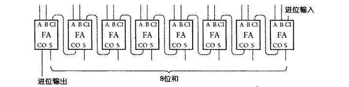
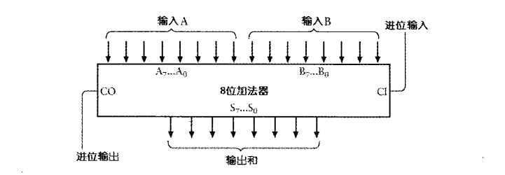

计算二进制数加法与计算十进制数加法非常相似，最大的不同就在于二进制加法中用到了一个更为简单的加法表。
| + | 0 | 1 |
|---|---|---|
| 0 | 0 | 1 |
| 1 | 1 | 10 |
以上加法表可以重新为带前导零的形式。
| + | 0 | 1 |
|---|---|---|
| 0 | 00 | 01 |
| 1 | 01 | 10 |
一对二进制数相加的结果中具有两个数位，其中一位叫做加法位(sum bit)，另一位叫做进位位(carry bit)，例如 1 加 1 的结果为 10，则 0 为加法位，1 为进位位。以上还可以拆分为两个表。
进位表
| + 进位 | 0 | 1 |
|---|---|---|
| 0 | 0 | 0 |
| 1 | 0 | 1 |
可以发现，进位表跟与门的输出结果是一样的，因此，可以利用与门计算两个二进制数加法的进位。
| AND | 0 | 1 |
|---|---|---|
| 0 | 0 | 0 |
| 1 | 0 | 1 |
进位位用与门表示。
加法表
| + 加法 | 0 | 1 |
|---|---|---|
| 0 | 0 | 1 |
| 1 | 1 | 0 |
或门跟加法表的结果很相似，除了 1 加 1 的结果之外。
| OR | 0 | 1 |
|---|---|---|
| 0 | 0 | 1 |
| 1 | 1 | 1 |
与非门和加法表的结果也很相似，除了 0 加 0 的结果之外。
| NAND | 0 | 1 |
|---|---|---|
| 0 | 1 | 1 |
| 1 | 1 | 0 |
下面我们将这三个表合并一下。
| 输入 A | 输入 B | 或门输出 | 与非门输出 | 加法结果 |
|---|---|---|---|---|
| 0 | 0 | 0 | 1 | 0 |
| 0 | 1 | 1 | 1 | 1 |
| 1 | 0 | 1 | 1 | 1 |
| 1 | 1 | 1 | 0 | 0 |
可以发现，只有在或门输出和与非门输出都为 1 时，加法结果才为 1，其它情况的加法结果为 0，这跟与门的情况一样，因此加法表可以将或门输出和与非门输出作为与门的输入来得到。电路如下图。

实际上这个电路有个专门的名称，叫做异或门，简写为XOR。异或门可以用以下特定电气符号来表示。
异或门的特征如下表所示。
| XOR | 0 | 1 |
|---|---|---|
| 0 | 0 | 1 |
| 1 | 1 | 0 |
加法位用异或门来表示。
半加器
从上文可以得知两个二进制相加数的加法位由异或门输出给出，而进位位由与门的输出给出。因此，可以将与门和异或门连在一起来计算两个二进制数（即 A 和 B）的和。
还可以简化如下图。
这个符号被称为半加器(Half Adder)。之所以叫半加器是因为它只是将两个二进制数相加，得出一个加法位和一个进位位。但是绝大多数二进制数是多于 1 位的。
全加器
半加器并没有将之前一次的进位位纳入到运算中，因此我们需要将两个半加器和一个或门进行如下连接。

原理：先从最左边第一个半加器的输入 A 和输入 B 开始，其输出是一个加和及相应的进位，这个加和需要跟前一列的进位输入相加，也就相当于前一列的进位和这个加个当成第二个半加器的输入 A 和输入 B，第二个半加器的加和就是最终的加和。另外，两个半加器的进位输入到一个或门中，这是因为两个半加器的进位输出是不会同时为 1 的，其中有一个产生进位即可。
上图可以简化如下。
这称为全加器(Full Adder)。
以下是全加器的输入和输出。
| 输入 A | 输入 B | 进位输出 | 加和输出 | 进位输出 |
|---|---|---|---|---|
| 0 | 0 | 0 | 0 | 0 |
| 0 | 1 | 0 | 1 | 0 |
| 1 | 0 | 0 | 1 | 0 |
| 1 | 1 | 0 | 0 | 1 |
| 0 | 0 | 1 | 1 | 0 |
| 0 | 1 | 1 | 0 | 1 |
| 1 | 0 | 1 | 0 | 1 |
| 1 | 1 | 1 | 1 | 1 |
当 8 个全加器首尾连接起来时，就是一个 8 位的二进制加法器。

下面将输入 A 和输入 B 分开，就可以方便地通过控制开关来输入两个 8 位的二进制数相加。

将加法位（上图的输出和）以及进位位（上图的进位输出）接上灯泡即可看到效果。